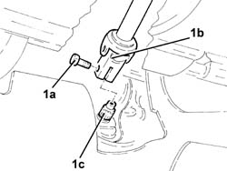
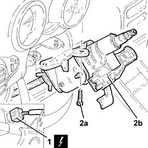
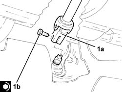

4110A30 Steering control shaft SUPPORT - R.R.
- Path
- Procedures > 41 STEERING > 4110 STEERING CONTROL AND LINKAGE > 4110A steering control > 4110A30 Steering control shaft SUPPORT - R.R.
- Kind
- repair procedure (removal / refitting; the operation number is the code)
- Applies to
- all engines; all production periods
- Interactive page
- https://sloeber94.github.io/elrnDB-a147/en/#/3025284
Applies to: all engines; all production periods
 Removing
Removing
 Refitting
RefittingProceed with removal 5580C18 air bag module - r+r .
Proceed with removal 4110A11 steering wheel - r+r for replacement or check for versions with air bag .
Applies to: engines: 2.0 TS; all production periods; only with equipment: Cambio robotizzato
Proceed with removal 4110A16 steering wheel - r r for replacement or checks for versions with airbag and manual gearbox with hydraulic selection .
Applies to: engines: 2.0 TS; all production periods; only with equipment: Cambio robotizzato
Proceed with removal 7040A37 fuse box cover - r r .
Proceed with removal 7040A26 steering column trim - r+r .
Proceed with removal 5550A12 complete stalk unit - r+r for versions with air bag .
1. Undo the bolt (1a) and disconnect the steering column (1b) from the power assisted steering box pinion.

Applies to: engines: 2.0 TS; all production periods; only with equipment: Cambio robotizzato
1. Disconnect the electrical connection from the steering angle sensor (only for versions with VDC up to 08/2001).
 | Name | Connector |
|---|---|---|
1 | Steering sensor |
2. Undo the bolts (2a) and remove the support with the steering control shafts (2b).

Applies to: all engines; all production periods
Refitting
RemovingPlace the support with the steering control shafts back in its housing and secure it using the bolts.
Connect the electrical connection to the steering angle sensor (only for versions with VDC up to 08/2001).
1. Connect the steering column (1a) to the steering box pinion and tighten the new bolt (1b) to the specified torque.
 | Fastening | Component | Ø | Value (daNm) |
|---|---|---|---|---|
1b | Bolt | STEERING SHAFTS | M8 | (Power assisted steering box pinion side) 2.5 |

Applies to: all engines; all production periods
Proceed with refitting 5550A12 complete stalk unit - r+r for versions with air bag .
Proceed with refitting 7040A26 steering column trim - r+r .
Proceed with refitting 7040A37 fuse box cover - r r .
Applies to: engines: 2.0 TS; all production periods; only with equipment: Cambio robotizzato
Proceed with refitting 4110A16 steering wheel - r r for replacement or checks for versions with airbag and manual gearbox with hydraulic selection .
Applies to: engines: 2.0 TS; all production periods; only with equipment: Cambio robotizzato
Proceed with refitting 4110A11 steering wheel - r+r for replacement or check for versions with air bag .
Proceed with refitting 5580C18 air bag module - r+r .
Topics linked from this page (7)
- 4110A11 steering wheel - r+r for replacement or check for versions with air bag
- 4110A16 steering wheel - r r for replacement or checks for versions with airbag and manual gearbox with hydraulic selection
- 5550A12 complete stalk unit - r+r for versions with air bag
- 5580C18 air bag module - r+r
- 7040A26 steering column trim - r+r
- 7040A37 fuse box cover - r r
- K58 Steering sensor